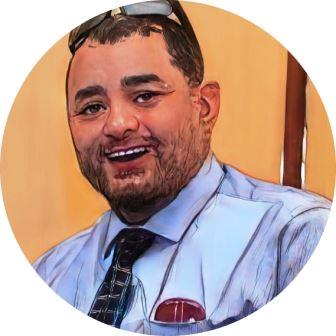
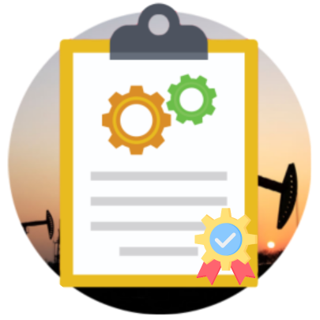
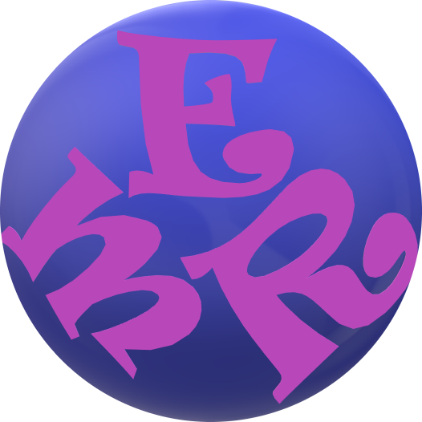
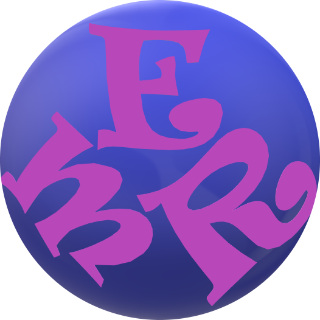

Hello.
I am Projects Interface management professional, Projects Support & CMMS Systems Engineer with more than 20 years extensive experience.
My Skills.
Systems Management & Programming
- Management of Projects Lessons Learned System.
- Cross Functional Management of GSPIR System for Projects Data Entry
(Assets, Operating Locations Spare Parts, PMs & Job Plans).
- CMMS Systems related Activities including initial development, PI Users
Support, PIRs, upgrades, Applications enhancements, Solutions Development
(GSPIR, PSV Program, etc.), Data analysis, Maintenance Processes Optimization,
merge with other Companies, development & maintenance of regular / ADHOC Reports,
development of Business Processes, Procedures, User Guides, etc.
- Computer skills (Windows, Office, MS Project MS Access).
- Python Programming / Web Development.

Quality Management
- Development & Implementation of Business Processes, QMS Objectives,
Action Plans, KPIs and coordination for Internal/ External Audits.
- Development of Policies, Procedures & Manuals.
- Efficient management of Company Design General Specifications update
and issuance of reliable progress reports, Dashboards & KPIs.
- Management of Projects Support Team in coordination with other cross‐functional teams, Internal/ External Interfaces, QA/QC, Documentation,
SPF Handover, Inspection & Construction management.
- Planning & Conduction of Awareness / Training Programs.
- Worked in diversity of professions with Managerial skills, Self‐motivation & minor supervision.
- Coaching, mentoring & assessment capabilities.
 
